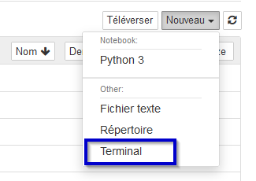
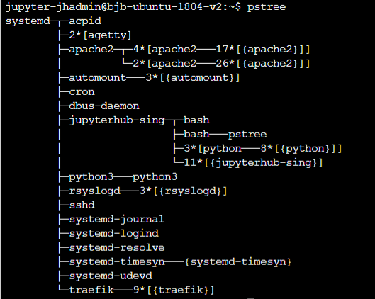

Notion de processus
Cette page et les suivantes du chapitre sont insiprées des pages suivantes :
- https://www.lecluse.fr/nsi/NSI_T/archi/process/
- https://www.lyceum.fr/tg/nsi/3-architectures-materielles-systemes-dexploitation-et-reseaux/2-gestion-des-processus-par-un-systeme-dexploitation
- http://lycee.educinfo.org/index.php?page=creation_thread&activite=processus
et bien entendu de l'habituel Numérique et Sciences Informatique, 24 leçons avec exercices corrigés aux editions Ellipses.
L'objectif de cette partie est de comprendre comment une machine peut exécuter plusieurs tâcches de manière simultanées : si l'on prend l'exemple du smartphone, alors que nous regardons une vidéo, il va suivre les antennes relais et se synchroniser avec, écouter s'il y a un appel téléphonique ou des SMS qui arrive, vérifier les nouveaux courriers électroniques, mettre à jour les notifications des différents réseaux sociaux,etc.
Pour comprendre, il nous faudra nous poser les questions suivantes :
- Comment sont donc exécutés les programmes par le système d'exploitation ?
- Comment plusieurs programmes peuvent-ils être exécutés simultanément ?
- Quels sont les risques et preoblèmes soulevés par ces exécutions simultanées ?
Du programme au processus
Les processus
Un processus est un programme en cours d'exécution sur un ordinateur. Il est caractérisé par
- un ensemble d'instructions à exécuter - souvent stockées dans un fichier sur lequel on clique pour lancer un programme (par exemple
firefox.exe) - un espace mémoire dédié à ce processus pour lui permettre de travailler sur des données qui lui sont propres : si vous lancez deux instances de firefox, chacune travaillera indépendament de l'autre avec ses propres données.
- des ressources matérielles : processeur, entrées-sorties (accès à internet en utilisant la connexion Wifi).
Il ne faut donc pas confondre le fichier contenant un programme (portent souvent l'extension .exe sous windows) et le ou les processus qu'ils engendrent quand ils sont exécutés : un programme est juste un fichier contenant une suite d'instructions (firefox.exe par exemple) alors que les processus sont des instances de ce programme ainsi que les ressources nécessaires à leur exécution (plusieurs fenêtres de firefox ouvertes en même temps).
Il est possible de visualiser et gérer les processus actifs d'une machine par l'intermédiaire d'un gestionnaire de processus, qui est un programme spécifique au système d'exploitation :
- sur windows, en utilisant Ctrl+Alt+Del, mais pas au Lycée... La gestion des processus étant critique, seuls les administrateurs de la machine peuvent y accéder...
- sur linux simplement par l'utilisation d'un terminal (la ligne de commande)
En cas de problème avec les Raspberry Pi, ou pour vous entrainer chez vous
JupyterHub est un serveur de Notebook que j'avais installé il y a fort longtemps, avant l'appartition de Capytale. Il est obsolète pour l'utilisation des notebooks, mais nous pouvons toujours en avoir une utilité : un terminal Linux est toujours disponible !
- Connectez vous sur jupyterHub (Votre identifiant est votre nom de famille immédiatement suivi de la première lettre de votre prénom. Pour le mot de passe, vous le choisissez à la pemière connexion)
-
Ouvrir un terminal :

Manipulations
-
/bin/: commandes de base nécessaires au démarrage et à l'utilisation d'un système minimaliste./sbin/: Exécutables pour les administrateurs (abréviation de system binaries, soit binaires système en français)./usr/bin/: Binaires exécutables qui ne sont pas déjà présents dans/binet donc pas indispensables à un système minimaliste.
Sous linux, les programmes sont par convention situées dans les dossiers
bin(pour binaries en anglais):Utiliser la commande
lspour lister les programmes présents dans/bin/. -
Utilisez la commande
cat /bin/lspour afficher le contenu du programmels. On constate que le fichier est un fichier compilé (utilisez Ctrl+C pour revenir au prompt). - Pour lancer un programme, il suffit d'écrire son nom (sans préciser le chemin si le dossier a été ajouté aux variables d'environnement). Par exemple vous pouvez lancer un interpréteur python par la commande
python3(tapezexit()pour sortir de l'interpréteur). - Vous pouvez visualiser les processus en exécution par l'intermédiaire de la commande
ps:pssimplement listera vos propres processus utilisateursps -ldonnera plus de détailsps -a -u -xoups -auxaffichera tous les processus de tous les utilisateurs(-a), avec le propriétaire du processus (-u), ainsi que les processus qui ne sont pas attachés à un terminal (-x).ps -efaffichera tous les processus (every) avec toutes les informations disponibles (full).- Le manuel d'utilisation de la commande
psest obtenu par la commandeman ps(ou par wikipedia, comme d'habitude).
Création d'un processus
Création des processus
La création d'un processus peut intervenir
- au démarrage du système ;
- par un appel d'un autre processus ;
- par une action d'un utilisateur (lancement d'application).
Quand un processus est crée, le système d'exploitation lui aloue un identifiant unique: le PID (Process Identifier).
Sur Linux, la création d'un processus se fait par clonage d'un autre processus au travers d'un appel systeme fork().
- le processus qui fait appel à
fork()est appelé processus père ; - le processus qui est ainsi créé par clonage est le processus fils ;
- après le clonage, un processus peut remplacer son programme par un autre programme grâce à l'appel système exec().
Lorsqu'un processus engendre un fils, l'OS génère un nouveau PID pour le fils, et le fils connait aussi le numéro de son père : le PPID (*Parent Process Identifier)
Le premier processus ?
Sous un système d'exploitation comme Linux, au moment du démarrage de l'ordinateur un tout premier processus (appelé processus 0 ou encore Swapper) est créé à partir de "rien" (il n'est le fils d'aucun processus). Ensuite, ce processus 0 crée un processus souvent appelé init ou systemd, il est créé au démarrage du système.
À partir de ce premier processus, les processus nécessaires au bon fonctionnement du système d’exploitation Linux sont créés (par exemple les processus crond, inetd, getty,...). Puis d'autres processus sont créés à partir des fils de init...
Ce système de création un peu particulier (désigné souvent par fork/exec) conduit à l'émergence d'une arborescence de processus : un processus père engendre un ou plusieurs fils qui à leur tour engendrent des fils etc...
L'instruction pstree permet de visualiser l'arbre de processus :

Chercher les PID
A l'aide de la commande ps -ef | more, chercher les PID et PPID des processus :
systemdapache2cronpython3(situé dans le dossier/opt/)- Commencez par exécuter Thonny, puis cherchez le PID et PPID du processus qui lui correspond.
A venir !
Commande top
Une des commandes les plus utiles sous Linux est la commande top. Cette commandes affiche les processus actifs en temps réel.
L'application est plus riche qu'il n'y paraît. Il faut passer un peu de temps à explorer toutes les options. Celles-ci s'activent par des raccourcis clavier. En voici quelques uns :
- H : affiche l'aide
- M : trie la liste par ordre décroissant d'occupation mémoire. Pratique pour repérer les processus trop gourmands
- P : trie la liste par ordre décroissant d'occupation processeur
- I : filtre les processus inactifs. Cela ne montre que ceux qui travaillent réellement.
- K : permet de tuer un processus - à condition d'en être le propriétaire. Essayez de tuer
systemd... - V : permet d'avoir la vue arborescente sur les processus.
- Q : permet de quitter top
Etats d'un processus
Un processus n'a pas seulement besoin d'accéder au processeur, mais il a souvent besoin d'accéder à des ressources autres comme :
- la mémoire vive : RAM,
- une mémoire de masse : disques durs, clés USB, mémoire flash...
- la lecture ou l'écriture d'un fichier...
- les périphériques d'entrée et de sortie : clavier, souris, écran, imprimante...
Ces ressources externes étant beaucoup moins rapides que le processeur, elles bloquent les processus lors de leur exécution.
Ainsi, lors de la vie d'un processus, celui-ci peut passer par trois états :
PRET(ready) : le processus est lancé et attend l'accès au processeur.ELU(running) : le processus a obtenu l'accès au processeur : il peut s'exécuter.BLOQUE(sleeping) : le processus est en cours d'exécution, mais attend une ressource en mémoire par exemple, il quitte le processeur pour libérer les ressources.

Exemple
Imaginons un simple programme Python :
texte = input("Entrez une phrase ?")
print(f"La longueur de votre phrase est {len(texte)}")
PRET. Dès qu'il a accès au processeur, il passe dans l'état Elu. La première instruction est alors exécutée. Or celle ci attend une saisie au clavier, et le processus ne peut pas continuer tant que l'utilisateur n'a pas agit. L'OS met alors en attente le processus (en état BLOQUE).
Lorsque l'OS, qui gère aussi les entrées et les sorties, repère une interaction avec le clavier, il va alors débloquer le processus, qui repassera en état PRET, puis en état ELU et exécutera alors la deuxième instruction. Sans autre intervention, le processus passera en état final (stopped), et se terminera naturellement. Il libèrera alors les ressources mémoire qu'il occupait, et enverra un signal à son processus parent, afin que celui-ci l'élimine de la table des processus.
Terminer un processus
Terminer un processus
Il est possible d'envoyer un signal de terminaison à un processus actif, par l'intermédiaire de la commande kill, en lui précisant le PID du processus qu'on souhaite arrêter. Un tel signal est équivalent au fait de fermer une fenêtre en interface graphique (par la croix ou bien par Alt+F4), ou bien au raccourci Ctrl+C dans la console.
Un tel signal est intercepté par l'application du processus et géré par cette dernière. Par exemple un logiciel de traitement de texte peut alors proposer à l'utilisateur de sauvegarder ses fichiers avant de quitter.
Question
- Dans JupyterHub, ouvrir un des notebooks de première.
- Repérer le
PIDcorrespondant à cette instance de notebook ( processus de typeipython) - Terminer le processus.
Tuer un processus
Parfois un processus se comporte de manière anormale, par exemple par une trop grande consommation de mémoire, ou lorsqu'une application « ne répond plus ». Il est possible dans ce cas de tuer le processus en question, en lui envoyant un signal de terminaison sans que l'application puisse l'intercepter, en passant l'option -9 à la commande kill, par exemple kill -9 13259.
En reprenant l'exemple du traitement de texte, dans ce cas les modifications ne seront pas sauvegardées et des données risquent d'être perdues. C'est une commande à utiliser avec précaution.
Création et suppression de processus en Python
Nous allons créer un processus à partir de Python. Pour cela :
-
Dans Thonny, créer un fichier texte vide, puis y insérer le code suivant :
import time a = 0 for i in range(100000): a += a**3 time.sleep(0.01) print("terminé") -
Sauvegardez ce fichier sous le nom
test_{votrenom}.py, puis si nécessaire importez-le dansJupyterHub. - Ouvrez DEUX terminaux .
- Dans le premier, utilisez la commande
python3 test.py. - Dans le second, lancez la commande
ps -aux, et cherchez le processus correspondant à l'exécution du scripttest_{votrenom}.py. - Tuez le processus avec la commande
kill, et observez ce qui se passe dans les deux terminaux. - Recommencez la procédure à partir de 4 en tuant le processus avec la commande
kill -9, et observez les deux terminaux.
Utilisation de fork()
-
Dans Thonny, créez un fichier nommé
testFork_{votrenom}.pydans lequel vous copierez les lignes suivantes :# Python program to explain os.fork() method # importing os module import os, time # Create a child process # using os.fork() method pid = os.fork() # pid greater than 0 represents # the parent process if pid > 0 : print("I am parent process:") print("Process ID:", os.getpid()) print("Child's process ID:", pid) # pid equal to 0 represents # the created child process else : print("\nI am child process:") print("Process ID:", os.getpid()) print("Parent's process ID:", os.getppid()) a = 0 for i in range(10000): a += a**3 time.sleep(0.001) print("Finished") # If any error occurred while # using os.fork() method # OSError will be raised -
Exécutez ce fichier par la commande
python3 testFork.py. Observez dans ce terminal l'effet du script. - Dans un autre terminal, avec la commande
ps -ef, observez les processus créés, ainsi que leursPIDetPPID. - (Si nécessaire, relancez le script !) Tuez le processus enfant. Que se passe-t-il ?
- Relancez le script ! Tuez le processus parent et attendez quelques instants. Que se passe-t-il ?
Processus Zombies
Parfois un processus père est tué avant que ses processus fils soient terminés. Ceux-ci restent alors dans la table des processus en situation finale, mais ne sont pas supprimés. On parle alors de processus zombies. Ceux-ci occupent une partie de la mémoire, tout en étant devenus inutiles...